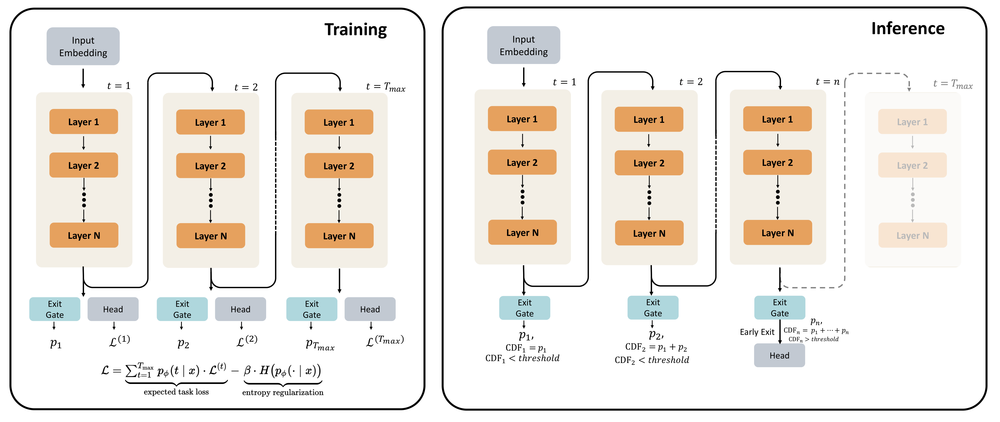
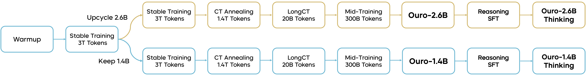
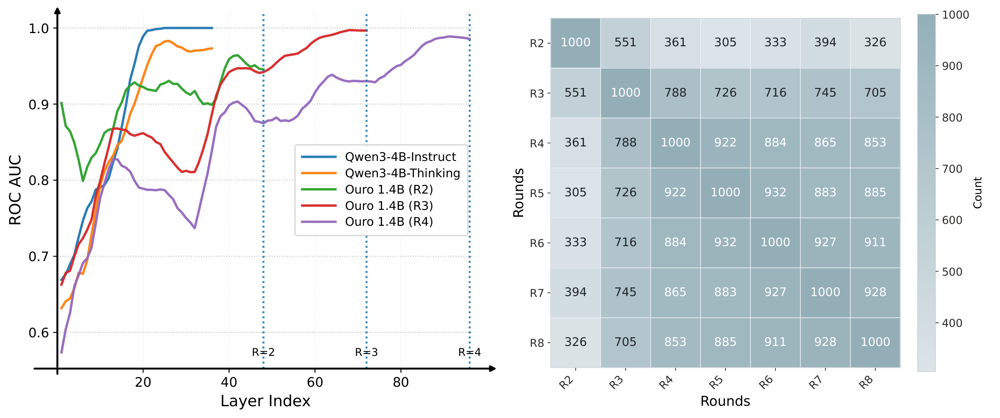
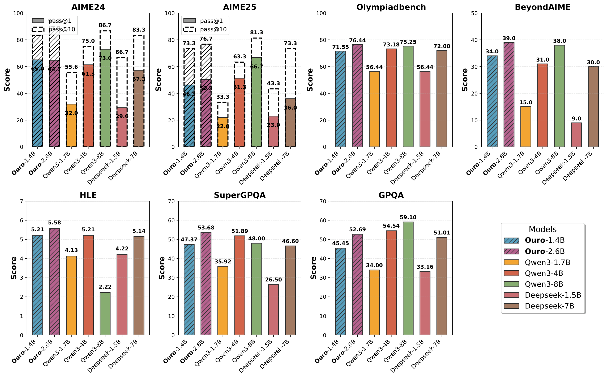
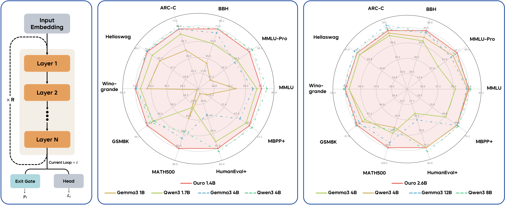
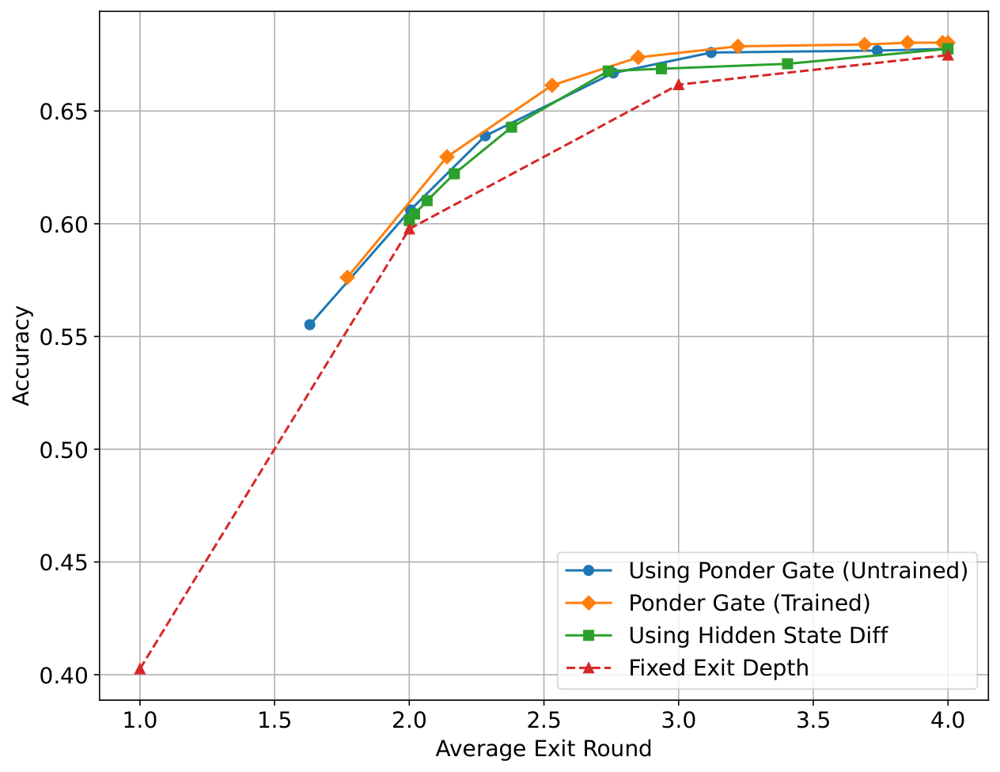
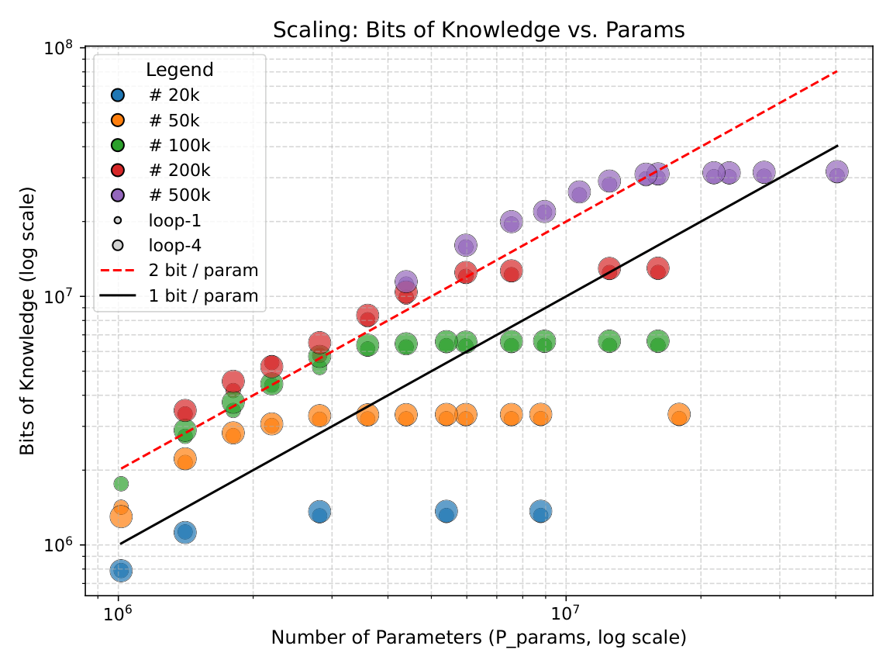
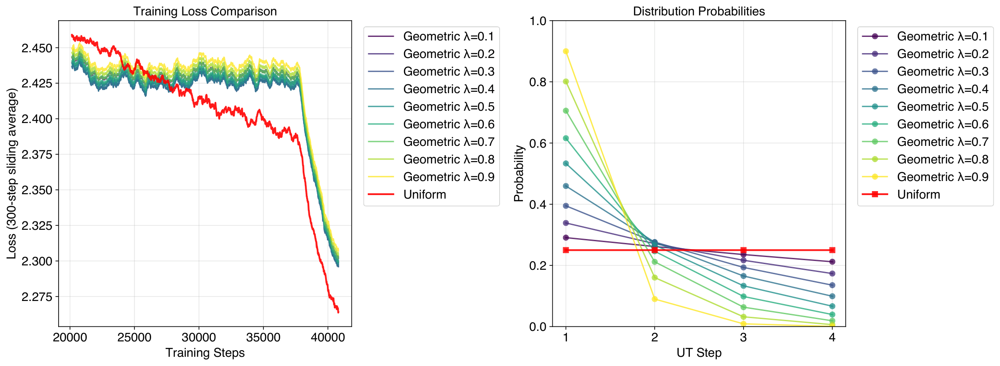

标准Transformer对所有token使用相同的计算量：无论这是一个简单的停用词还是一个复杂的数学推理步骤。这显然不是最优的：推理密集型token需要更多计算，而简单token可以快速通过。
Looped LLM提出了一种简洁而强大的方案：将同一组Transformer层循环复用T_max次，每个token在每个循环步可以通过一个学习到的门控机制自适应退出。模型在训练时学会对简单token早期退出，对复杂推理token投入更多循环计算。在推理、知识理解、多跳问答、安全性等多维度评估中，Looped LLM在同等FLOPs下全面超越标准Transformer。
Looped LLM的核心架构非常简洁：一个由N层组成的Transformer模块H^L被重复使用T_max次。在每个循环步 ℓ，模型通过一个门控机制预测退出概率pℓ，同时语言建模头Lℓ 计算当前步的损失。
训练时，模型对所有T_max步都计算损失和门控信号。推理时，模型可以根据累积退出概率自适应退出：简单token可能只需1-2步，复杂token可以使用全部T_max步。下图展示了训练和推理时的架构对比：

门控机制是Looped LLM的核心组件。每个循环步 ℓ 有一个退出门，预测当前步的退出概率pℓ。门控信号基于当前隐状态，通过一个轻量级MLP计算。
训练时，门控通过两个阶段的优化来学习：阶段I学习一个熵正则化目标，让模型探索不同循环步的使用；阶段II聚焦于自适应门控训练，让模型学会动态分配计算资源。这种两阶段设计避免了门控过早收敛到次优策略。
下图展示了训练过程中循环步的使用模式变化：

Looped LLM与标准Transformer的关键区别在于计算分配方式。标准模型所有token经过相同层数，而Looped LLM可以按token难度分配计算量。
下图的对比分析展示了两种架构的差异。标准模型（左）的推理路径是固定的，而Looped LLM（右）的推理路径是动态的：简单token快速退出，复杂token进入更深循环。

在多个推理基准上的实验结果显示，Looped LLM在同等FLOPs下全面超越标准Transformer。下图左展示了在不同模型规模下的性能对比，Looped LLM的曲线始终在标准模型之上。下图右展示了雷达图，在推理、知识、多跳问答、安全性等多个维度上的综合评估。


Looped LLM的一个关键特性是推理时计算可以灵活扩展。增加循环步数T_max可以持续提升性能，且存在可预测的Scaling Law。
下图展示了不同循环步数对性能的影响。随着循环步数增加，模型在推理任务上的准确率持续提升，而标准Transformer受限于固定层数，无法利用额外的推理计算。


Looped LLM的门控策略本质上是一种几何路由：每个循环步独立决定是否退出。这与均匀路由（所有token使用相同步数）形成对比。
下图展示了两种路由策略的对比。几何路由在保持性能的同时大幅节省计算量，因为大部分token在早期步就足够确定，只有少数复杂token需要深层循环。

参考：https://arxiv.org/abs/2510.25741